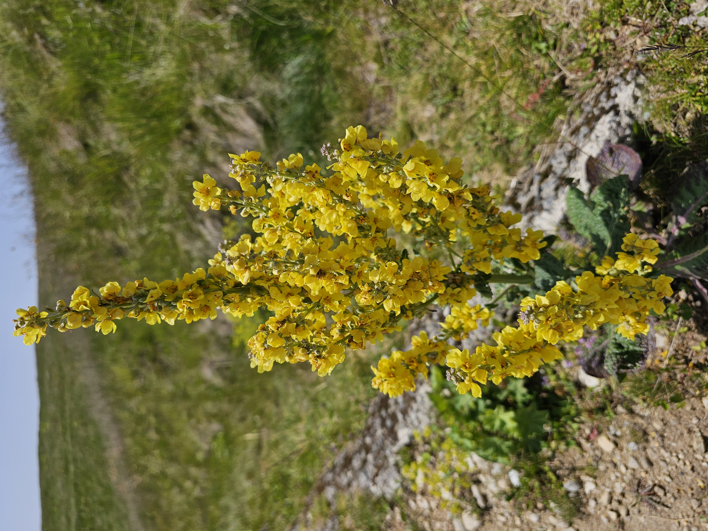
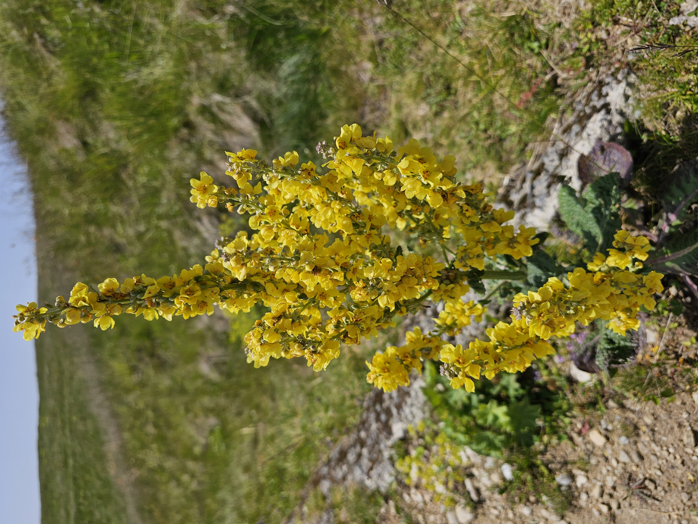

Sfinxul Bratocei Adventure
Sfinxul Bratocei, or the Bratocea Sphinx, is a fascinating natural rock formation located in the Ciucaș Mountains of Romania. This geological marvel is named for its resemblance to the famous Sphinx of Egypt, though it was naturally sculpted by the elements over millennia. The Bratocea Sphinx is perched at an elevation of approximately 1,800 meters (5,906 feet), offering a commanding view of the surrounding landscape.
The rock formation is characterized by its imposing, sphinx-like shape, with a prominent head and shoulders emerging from the mountainside. This striking appearance is the result of wind and water erosion acting on the limestone and conglomerate rocks, gradually carving them into the distinctive figure seen today. The Bratocea Sphinx stands as a testament to the power of natural forces and the beauty they can create.
Surrounding the Sphinx is a rugged and picturesque terrain typical of the Ciucaș Mountains, with rolling hills, dense forests, and open meadows. The area is rich in biodiversity, home to various species of plants, including endemic and rare ones, as well as wildlife such as deer, foxes, and birds of prey.
The Bratocea Sphinx is a popular destination for hikers and nature enthusiasts. Several trails lead to this natural wonder, varying in difficulty and offering spectacular views along the way. The hike to the Sphinx provides an opportunity to experience the serene beauty of the Ciucaș Mountains, with its fresh air, scenic vistas, and the peaceful ambiance of nature.
In addition to its natural allure, the Bratocea Sphinx is also steeped in local folklore and legend. Stories and myths abound, adding an air of mystery and intrigue to the formation. Visitors often feel a sense of awe and wonder as they stand before this ancient sentinel of the mountains, contemplating the passage of time and the forces that shaped it.
Overall, Sfinxul Bratocei is a captivating landmark within the Ciucaș Mountains, offering a unique blend of natural beauty, geological interest, and cultural significance. It is a must-see for anyone exploring this scenic region of Romania.
-
The adventure begins at a trailhead located above a busy road at the foot of the Ciucaș Mountains. Excited and ready, we start our ascent. We are immediately greeted by the fresh scent of pine trees and the melodic chirping of birds. The initial part of the hike takes us through an open field, where we enjoy the fresh air and amazing scenery. The camera captures the vibrant landscape, our enthusiasm, and the beauty of the natural surroundings, setting the stage for a captivating adventure.


Imagine embarking on this adventure together, surrounded by the breathtaking beauty of the Ciucaș Mountains.
-
-
As we continue our ascent, we encounter some dead fallen trees across the trail. Taking a moment to observe the textures and details of their bark. This scenes adds an element of natural ruggedness and highlights the dynamic and ever-changing environment of the Ciucaș Mountains.


-
As we continue the trail
Reaching a denser section of the trail, we find ourselves amidst a grove of trees. The flora becomes more diverse and vibrant, with each step revealing increasingly stunning views of the mountainous landscape. The awe of the beauty of the Ciucaș Mountains unfolds, growing more breathtaking by the minute.


-
Reaching the Forest
-
Going through the Forest


-
As we exit the forest, a breathtaking sight greets us: huge rocks in the shape of massive heads loom into view. These colossal stone figures, sculpted by the elements over millennia, stand like ancient guardians of the mountain. The camera pans over these remarkable formations, highlighting their intricate details and imposing presence. We pause in awe, taking in the surreal and majestic landscape that marks another milestone in our journey towards the Bratocea Sphinx.
Te View goes spectacular


-
Reaching a green plateau dotted with small pine trees, we are enveloped by the pure, intoxicating air. The view from this vantage point is nothing short of spectacular, with rolling hills and distant peaks creating a stunning panorama.We are breathing deeply, savoring the crisp, clean air and the serene beauty of our surroundings.
The Green plateau

-
Continuing onward, we navigate through dense branches that scratch our clothing and skin, heightening the sense of adventure. Each step brings us closer, and our excitement builds. Pushing through the thick foliage, emerging with the top now in sight, standing majestically against the backdrop of the Ciucaș Mountains.
Almost There


-
As we reach the summit, we are amazed by the vast viewing distance, the landscape stretching endlessly before us. We tread carefully, mindful of a solemn cross placed near the edge, a poignant reminder that someone once ventured too close and lost their life. Despite the sobering moment, our admiration for the breathtaking view remains undiminished. The perfect blend of beauty and reverence for the power of nature is captured as the we stand in awe, taking in the magnificent scenery.
Peak Serenity


-
The Road Back
As we bid farewell to the beautiful Bratocea Sphinx, we take one last lingering look at the breathtaking scenery surrounding us. The towering, majestic rock formations that resemble ancient guardians, the lush green plateau dotted with small pine trees, and the endless horizon of rolling hills and distant peaks all create a stunning tableau. We pause to take deep breaths of the pure, crisp air, savoring the moment. Sunlight dances on the rocky surfaces, casting intriguing shadows and highlighting the intricate details carved by nature over millennia. Birds soar gracefully overhead, their calls echoing in the serene silence, adding to the sense of peace and tranquility. Exchanging smiles and nods, we acknowledge the shared experience of awe and wonder. As we begin our descent, the camera lingers on the Sphinx, capturing its grandeur one last time. Moving away, we navigate through the dense, scratching branches that we encountered earlier, the vibrant flora once again enveloping us. Occasionally, we glance back at the Sphinx growing smaller in the distance, each look filled with admiration and gratitude for the unforgettable journey. The scene transitions to our careful steps along the trail, now familiar yet still filled with the magic of discovery. Reentering the forest, the play of light and shadow creates a mesmerizing pattern on the forest floor. The scent of pine grows stronger, and the melodic chirping of birds accompanies us, a fitting soundtrack for our return. The trail leads us back to the open field where our adventure began, the village now visible in the distance. Approaching the trailhead, we take a final moment to absorb the beauty around us. The camera captures our thoughtful expressions, reflecting on the day’s journey and the natural splendor we’ve witnessed. With the Ciucaș Mountains as a magnificent backdrop, we share a sense of accomplishment and a deeper connection to nature. The Bratocea Sphinx becomes barely visible in the far-off peaks."Until next time, Bratocea Sphinx. Thank you for the memories."
 


-
1. The Legend of Goliath’s Tower
ne of the most famous rock formations in the Ciucaș Mountains is known as Goliath’s Tower. According to legend, this towering rock was named after a giant named Goliath who roamed the area. Goliath was said to be a gentle giant who protected the local villagers from wild animals and invaders. After his death, the villagers believed that his spirit remained in the mountains, watching over them. The rock formation resembling a towering figure is thought to be a monument to Goliath’s enduring presence and protection.
2. The Brides’ Rocks (Miresei)
The Ciucaș Mountains also feature a striking formation called the Brides’ Rocks. Local legend tells the story of a beautiful maiden who was to be married. On her wedding day, she was ambushed by robbers in the mountains. To escape her fate, she prayed for help and was miraculously transformed into stone, along with her bridal party. The unusual rock formations are said to represent the bride and her bridesmaids, standing as a testament to her purity and sacrifice.
3. The Shepherd and the Bear
Another popular legend involves a shepherd who tended his flock in the Ciucaș Mountains. One day, a bear attacked his sheep, and the brave shepherd fought to protect them. Despite his efforts, the bear was too strong, and the shepherd prayed to the heavens for assistance. His prayers were answered when a lightning bolt struck the bear, turning it into stone. The rock formation resembling a bear is believed to be a reminder of this divine intervention and the shepherd’s bravery.
4. The Mountain Witches (Vâlve)
The Ciucaș Mountains are also home to tales of mountain witches, known locally as "Vâlve." These supernatural beings are believed to have control over the weather and the natural elements. According to folklore, the Vâlve can be both benevolent and malevolent, depending on how they are treated by humans. It is said that they help those who respect nature, providing good weather for crops and guiding travelers. However, those who exploit or harm the environment might incur their wrath, facing storms and misfortune.
Further along, the trail becomes steeper, challenging our endurance. Despite the increasing difficulty, our spirits remains high as the summit appears tantalizingly closer, yet still so far away. With determination and the ever changing dramatic scenery, we are getting closer of reaching the peak.

The Ciucaș Mountains, part of the Carpathians in Romania, are rich in folklore that reflects the deep connection between the local people and their natural surroundings. Here are some captivating pieces of folklore associated with the Ciucaș Mountains: